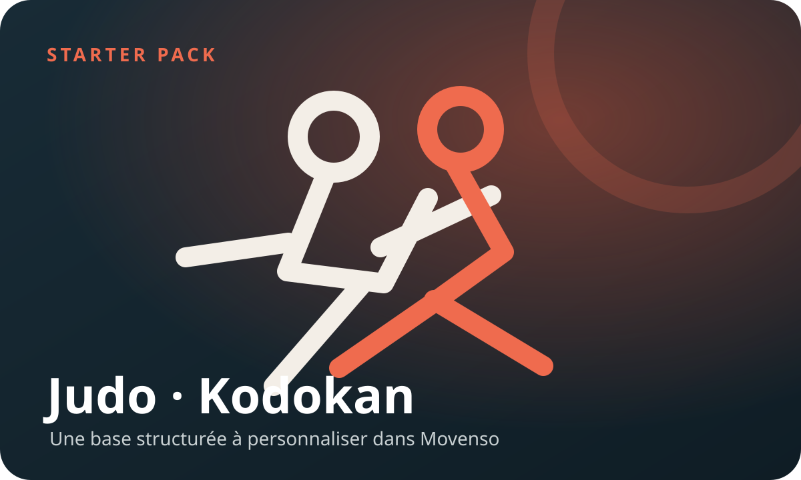

1
Garde une trace
Une note, une vidéo ou un lien suffit. Tu peux classer immédiatement ou revenir dessus plus tard.
Bibliothèque personnelle d’arts martiaux
Movenso rassemble tes techniques, tes notes, tes vidéos et tes séances dans une application simple, sans compte et sans bibliothèque imposée.

Trois gestes, pas un mode d’emploi
Movenso suit le rythme d’un pratiquant : capter rapidement, revenir sur une fiche claire, puis assembler ce qu’il veut travailler.
Une note, une vidéo ou un lien suffit. Tu peux classer immédiatement ou revenir dessus plus tard.
Nom, description, points clés, commentaire personnel et liens utiles restent réunis dans la même fiche.
Assemble techniques, étapes et pauses, puis déroule la séance avec le chronomètre intégré.
Commencer simplement
Movenso n’arrive pas avec une vérité toute faite. Tu peux créer ta première technique en quelques secondes ou importer un pack de démarrage.

Starter packs
Les packs sont des fichiers facultatifs. Une fois importés, ils deviennent une base que tu peux adapter à ta pratique.

Disponible au catalogue
Une première bibliothèque structurée avec les techniques et des liens de démonstration lorsqu’ils sont disponibles.
.movpackUn écosystème qui peut grandir
Movenso peut référencer des packs communautaires tout en laissant leur contenu, leur version et leur licence sous la responsabilité de leurs auteurs.